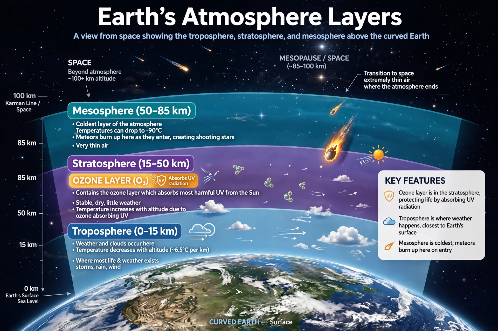

From Wikipedia, the free encyclopedia
| Stratosphere | |
|---|---|
 Layers of Earth's atmosphere | |
| Altitude range | ~12 km to ~50 km (varies with latitude and season) |
| Lower boundary | Tropopause |
| Upper boundary | Stratopause |
| Temperature | Rises with altitude, from about −60 °C to near 0 °C at the stratopause |
| Notable feature | Ozone layer |
The stratosphere is the second layer of the Earth's atmosphere, located above the troposphere and below the mesosphere. It extends from the tropopause, at roughly 12 km above the surface on average (about 7 km at the poles and 17 km in the tropics), up to the stratopause at about 50 km altitude. The stratosphere is stratified in temperature: air temperature increases with altitude, the opposite of the troposphere below, which makes the stratosphere dynamically stable and almost free of convection and weather.
Within the stratosphere, temperature rises from around −60 °C near the tropopause to about 0 °C at the stratopause. This warming is caused by the absorption of ultraviolet radiation from the Sun by ozone, most of which is concentrated in the ozone layer between roughly 15 and 35 km. Because warm air sits above colder air, vertical mixing is weak; material that enters the stratosphere — such as volcanic aerosols or long-lived pollutants — can remain there for years.
Stratospheric circulation is driven largely by the Brewer–Dobson circulation, a slow overturning that carries air upward in the tropics and poleward and downward at higher latitudes. The winter polar stratosphere hosts the polar vortex, and sudden stratospheric warming events can disrupt it, sometimes influencing surface weather weeks later. Powerful volcanic eruptions, such as El Chichón in 1982 and Pinatubo in 1991, inject sulphate aerosols into the stratosphere, cooling the surface measurably for a year or more.
Commercial airliners cruise in the lower stratosphere at high latitudes and around the tropopause elsewhere, above most weather. High-altitude balloons and research aircraft sample the stratosphere directly. Human-made chlorofluorocarbons (CFCs) released chlorine and bromine that catalytically destroyed ozone, producing the Antarctic ozone hole; the 1987 Montreal Protocol phased out CFC production, and stratospheric ozone is slowly recovering.
See also: Atmosphere of Earth · Troposphere · Mesosphere · Ozone depletion